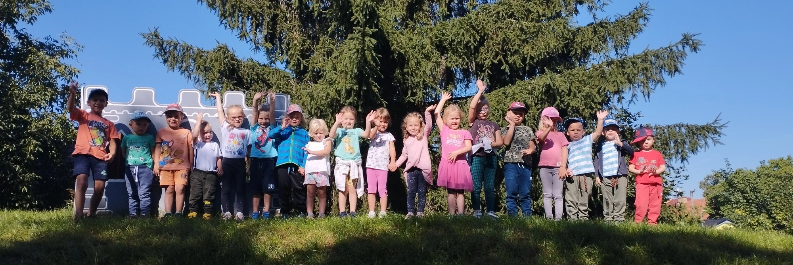
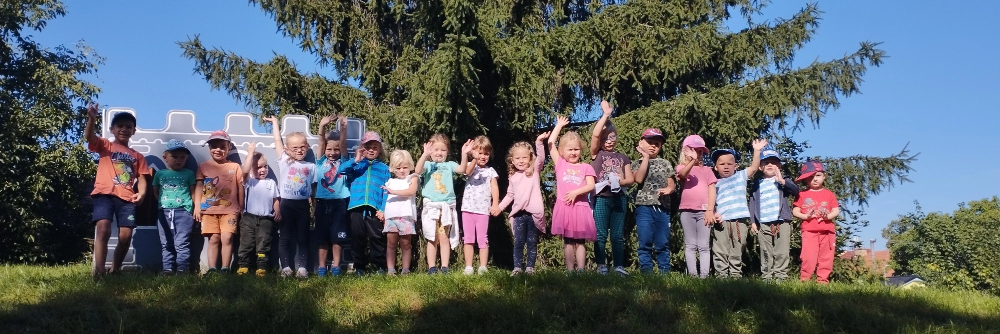
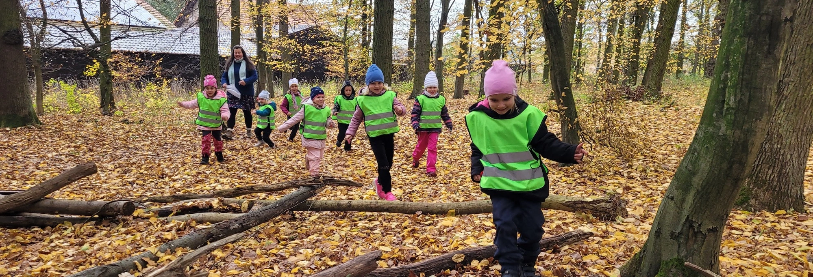
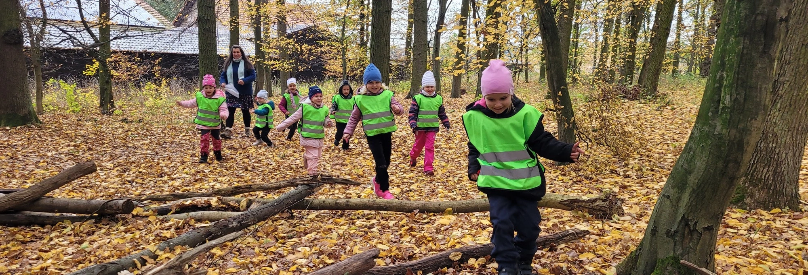
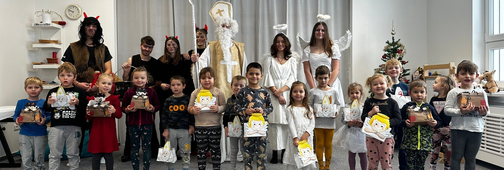
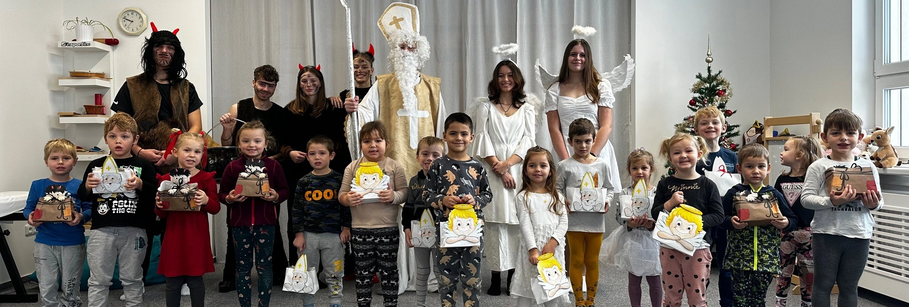

 



 



Rodiče vítáni
Mateřská škola Kostomlaty nad Labem získala v roce 2020 certifikaci Rodiče vítání, která zajišťuje, že škola dodržuje 7 základních etických kritérií sestavených společností EDUin. Těmito kritérii, které se škola zavázala plnit, tak škola vysílá směrem k rodičům jasný signál, že jí na komunikaci a spolupráci s nimi záleží.
Podrobné informace najdete zde.
Františkův cestovatelský deník a Fanynka pomáhá
František se vydává, stejně jako loni, na turné s dětmi z Červené třídy. Fanynka je velká pomocnice, učí se s dětmi zapojovat do běžných domácích prací.
Co dělat, když se u vás doma objeví František nebo Fanynka?
Děti mají možnost vzít Františka a Fanynku na výlet, ukázat něco zajímavého ze svého života, nebo se s nimi aktivně zapojit do běžných domácích prací a podílet se na nich. Děti vědí, že jsou František s Fanynkou vzácná návštěva a že je třeba zacházet s nimi ohleduplně.
Čím mohu přispět jako rodič při Františkově putování a návštěvě Fanynky doma?
Vyfotím je s dítětem v akci. Fotografii poté zašlu na email: mskostomlatynl@gmail.com. Tyto fotografie budou vloženy do deníků Františka a Fanynky, které jsou dětem volně k dispozici. Smyslem tohoto projektu je sdílení zkušeností a zážitků s dětmi v MŠ.
Festival Den poezie
Mateřská škola Kostomlaty nad Labem, příspěvková organizace ve spolupráci s Obecním úřadem Kostomlaty nad Labem a Mateřskou školou Pampeliška Lysá nad Labem pořádá od 1. do 30. listopadu „Putovní výstavu“ v rámci Festivalu Den poezie.
Festival Den poezie se koná každoročně na počest narození Karla Hynka Máchy, koordinátorem festivalu je Společnost poezie z.s.
Celé Česko čte dětem
Tento projekt bude ve školním roce 2022/2023 probíhat od října ve spolupráci se Základní školou Kostomlaty nad Labem formou pátečního předčítání dětí dětem.
Projekt proběhne v Zelené a Žluté třídě v dopoledních hodinách. Od měsíce února 2023 se mohou do projektu zapojit také rodiče dětí ve svých kmenových třídách v rámci čtení při odpočinku dětí každé pondělí 12:15 - 12:45.
Se Sokolem do života
Projekt Se Sokolem do života se zaměřuje na nejmladší generaci - předškolní děti.
Je rozdělený do tří kategorií podle obtížnosti, aby vyhovoval růstu a vývoji dětí v předškolním věku. Má podobu pravidelného cvičení dětí v tělocvičně ZŠ Kostomlaty nad Labem dle daných metodik Sokola.
GIVT
MŠ je zapojena do charitativního projektu, který podporuje neziskové organizace, tedy i nás.
Chcete-li nás tedy prostřednictvím GIVT podpořit, tak pod následujícím odkazem zjistíte jak na to. Jak funguje GIVT?
Evropské strukturální fondy

Výstupy z proběhlých projektových dnů, které jsme povinni uchovávat jako povinnou publicitu.
Projektové dny spolufinancované EU OP VVV z roku 2021
"Elektřina", fotky si můžete prohlédnout pod následujícím odkazem.
"Voda", fotky si můžete prohlédnout pod následujícím odkazem.
"Létající barvy", fotky si můžete prohlédnout pod následujícím odkazem.
"Bubnování", fotky si můžete prohlédnout pod následujícím odkazem.